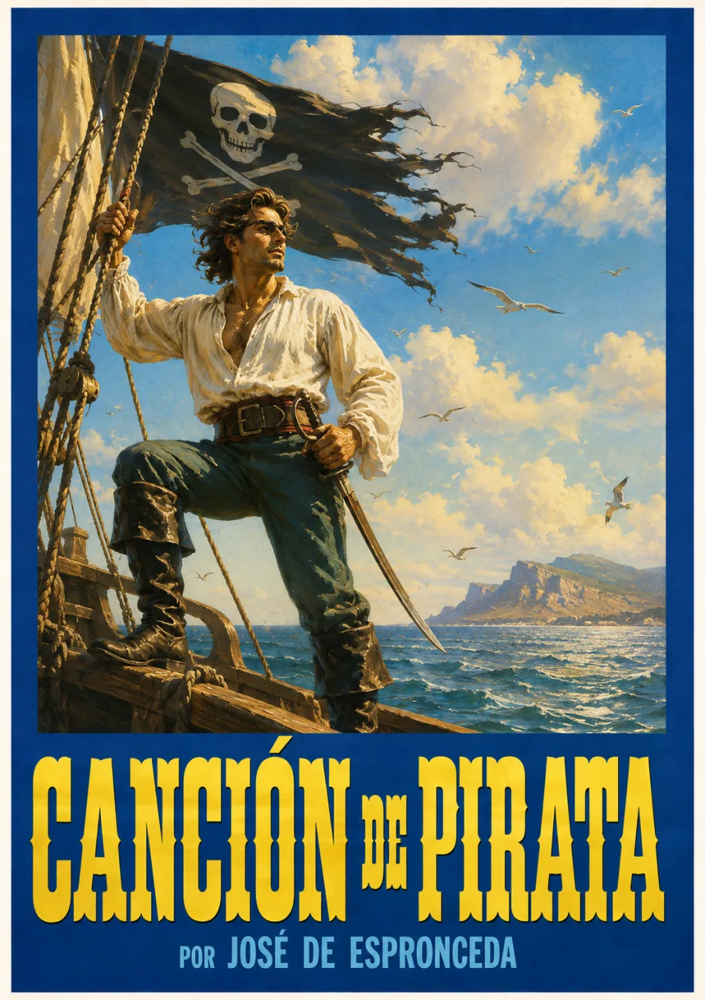

Poesía · Romanticismo
Canción
del pirata.
El horizonte no tiene dueño.
Una voz contra todas las fronteras. Un barco como único reino. El poema que hizo de la libertad una forma de vivir.

El mar como
única patria.
José de Espronceda entrega la palabra a un capitán que ha elegido vivir fuera de toda frontera, corona y código. Desde la cubierta de su navío, el pirata contempla Europa, Asia y Estambul: el mundo entero cabe bajo su vela.
El forajido marino se convierte en emblema del individuo romántico: orgulloso, condenado y soberano incluso ante la tormenta y la muerte. La cadencia del poema acompaña ese desafío, entre el rumor del mar y el golpe de los cañones.
«Que es mi barco mi tesoro,
que es mi dios la libertad.»José de Espronceda
BIBLIOTECA SONORA
La obra,
en voz alta.
Grabación próximamente
VOLUMEN
La grabación estará disponible aquí.
Mientras tanto, descubre la ruta de la obra.
Ruta de escucha
05 PARTESUn recorrido temático por la obra.